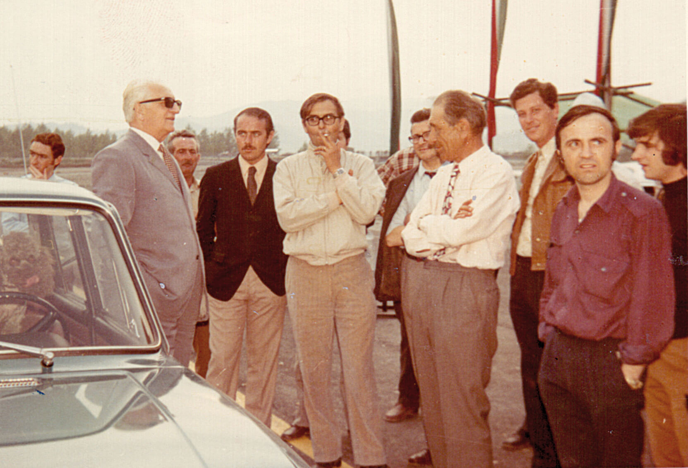
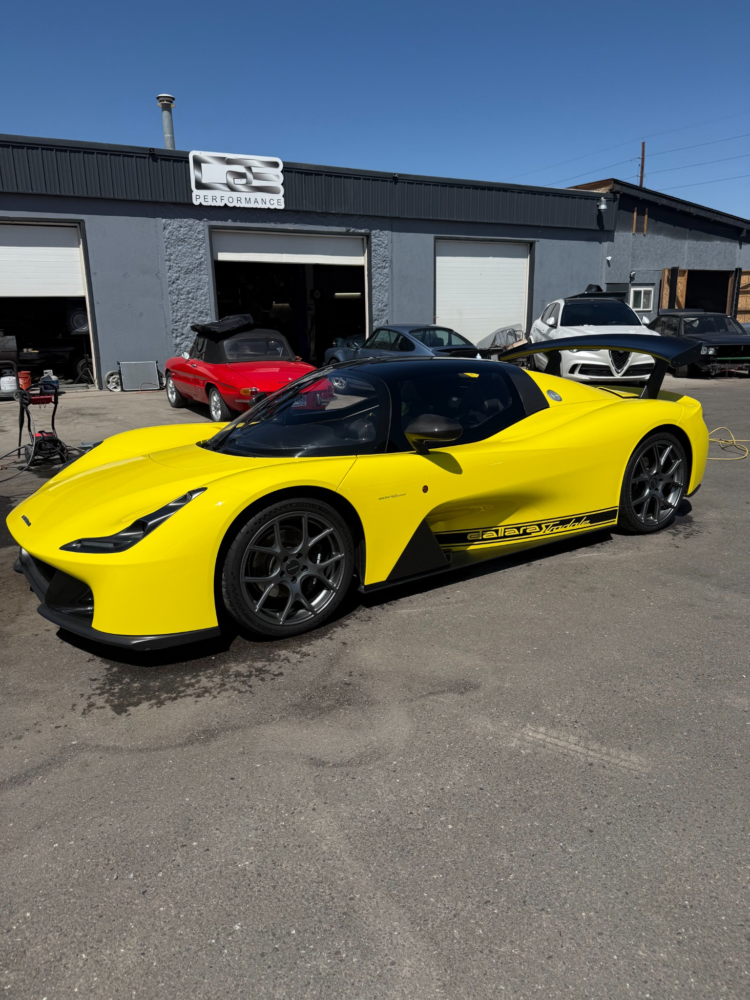
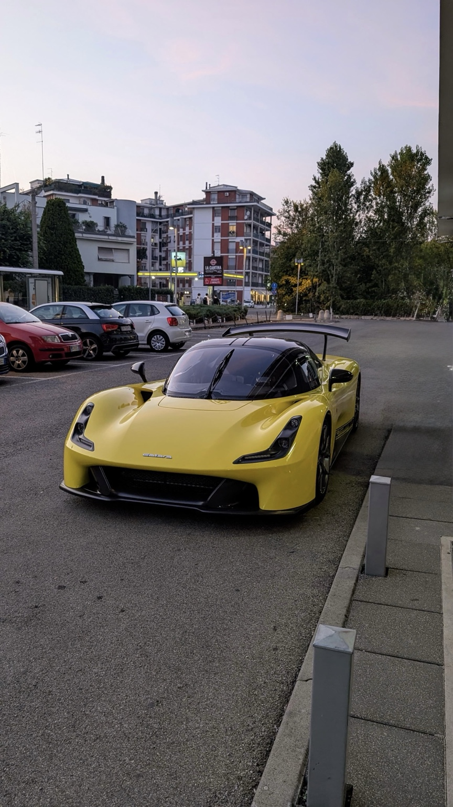
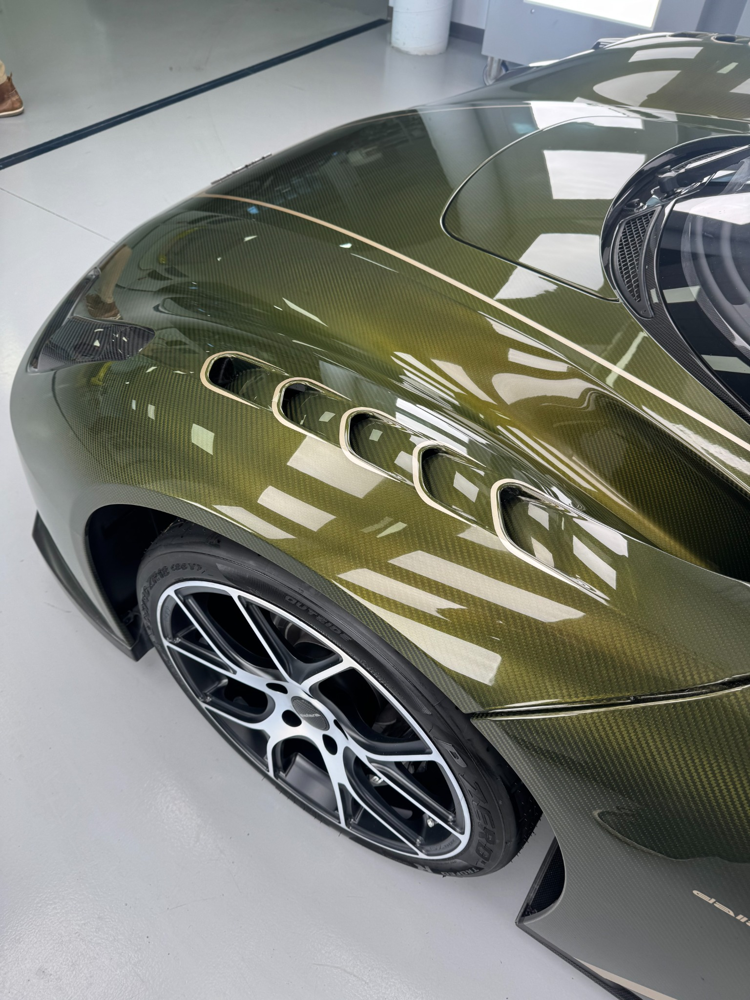
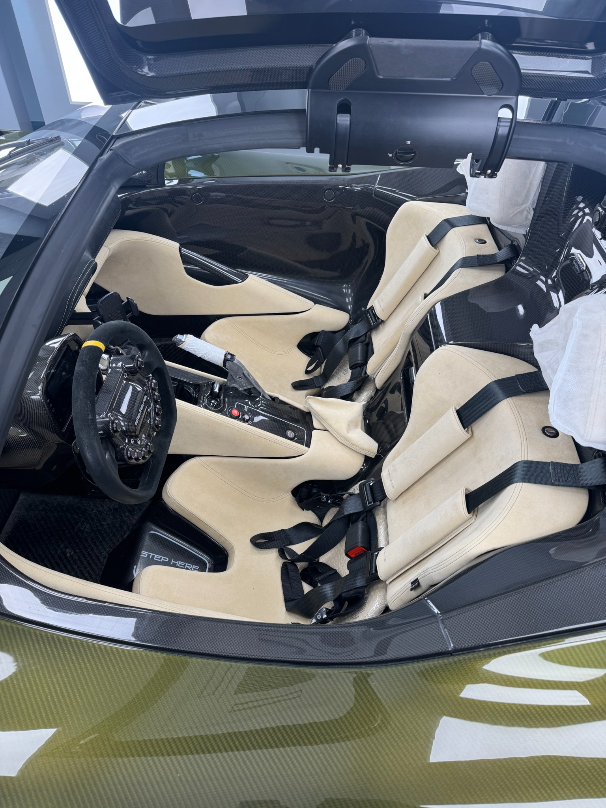
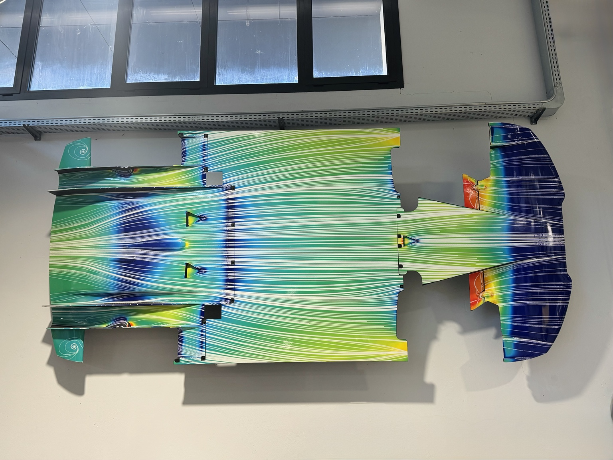

Photo Gallery
Explore the Dallara Stradale.
Heritage, Chassis #007, carbon-fiber construction, cockpit details, and Dallara's aerodynamic engineering.
← Back to Chassis #007Heritage


Chassis #007



Details & Interior


Engineering
